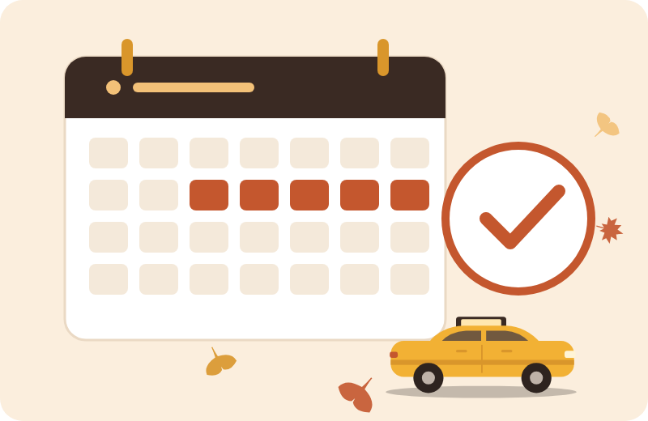

양수교육 안내
개인택시 양수교육,
순서대로 준비하면 어렵지 않습니다
자격 확인부터 교육 신청, 수료 후 양수 진행까지 한 페이지로 정리했습니다.
먼저, 자격부터
확인하세요
2021년부터 사업용 운전경력이 없어도 양수가 가능해졌습니다. 헷갈리시면 무료 자격 확인 상담을 먼저 받아보세요.
무사고 운전경력 5년
경찰청 기록 기준입니다. 경미한 사고라도 기록이 있으면 그 시점부터 다시 계산될 수 있어 미리 확인이 필요합니다.
양수교육 이수
한국교통안전공단 교통안전체험교육센터의 개인택시 양수교육(5일 과정)을 수료해야 합니다.
택시운전자격
택시운전자격시험에 합격해 자격을 갖추고 있어야 양수 인가 심사를 통과할 수 있습니다.
양수교육 한눈에 보기
| 주관 | 한국교통안전공단 교통안전체험교육센터 |
|---|---|
| 교육 장소 | 경기 화성 또는 경북 상주 센터 중 선택부산에서는 상주 센터가 비교적 가깝습니다. |
| 교육 기간 | 5일 과정 (이론 + 실기) |
| 교육비 | 약 52만 원 (2026년 안내 기준)숙박·식비 포함 여부와 최신 금액은 공단 공지를 꼭 확인하세요. |
| 신청 방법 | 공단 교육 홈페이지 온라인 접수만 가능 (현장 접수 불가) |
| 교육 일정 | 공단이 정기적으로 공지하며, 접수가 빨리 마감되는 경우가 많습니다. |
| 수료 유효기간 | 정해진 기간 안에 양수 인가를 받아야 합니다.최근 기간이 바뀌었다는 안내가 있어, 신청 전 공단 공지로 다시 확인하세요. |
※ 2026년 10월 기준 안내입니다. 일정·비용·유효기간은 공단 사정에 따라 바뀔 수 있으며, 최종 기준은 한국교통안전공단 공지입니다.
신청부터 양수까지 4단계
교육 시기와 매물 시기를 맞추는 것이 핵심입니다.
- 1
자격 확인
무사고 경력·운전자격 확인
- 2
일정 고르기
매물 시기와 맞는 회차 선택
- 3
온라인 접수
공단 홈페이지 접수·결제
- 4
수료 후 양수
유효기간 안에 계약·인가
교육 전 준비 체크리스트
- 운전경력증명서로 무사고 기간 확인 (정부24·경찰서 발급)
- 택시운전자격 보유 여부 확인
- 공단 교육 홈페이지 회원가입 미리 해두기
- 접수 당일 결제 수단 준비 (카드·계좌)
- 5일간 생업·운행 일정 비워두기
- 교육 센터까지 이동·숙박 계획

교육 먼저? 매물 먼저?
교육만 먼저 받아두면 유효기간이 흐르는 동안 원하는 매물이 안 나올 수 있고, 매물부터 잡으면 교육 일정이 안 맞아 계약이 늦어질 수 있습니다.
희망 시기를 알려주시면 교육 회차와 매물 시기를 맞춰 진행표를 짜 드립니다.
양수 상담 예약하기